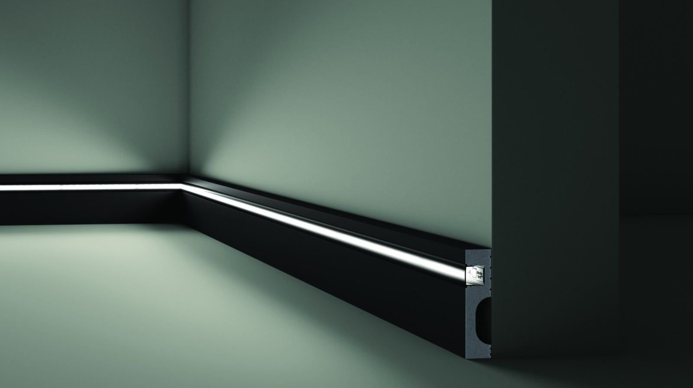
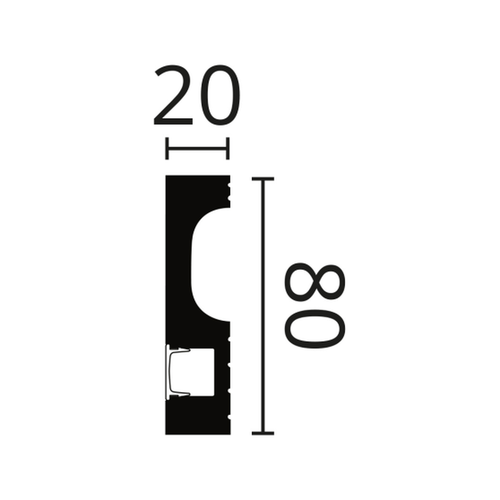
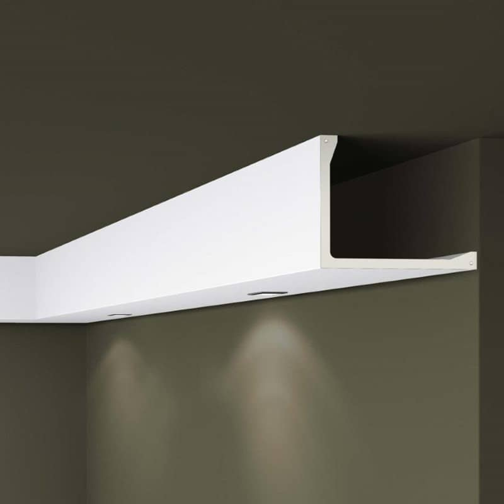
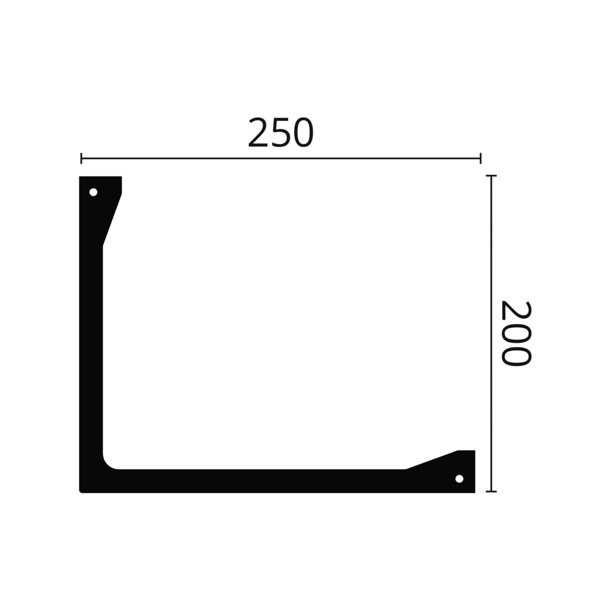
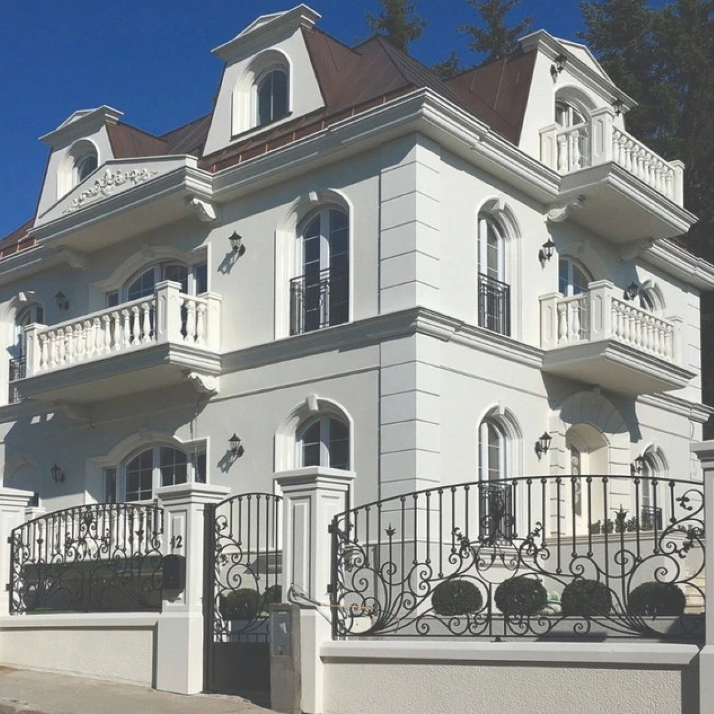
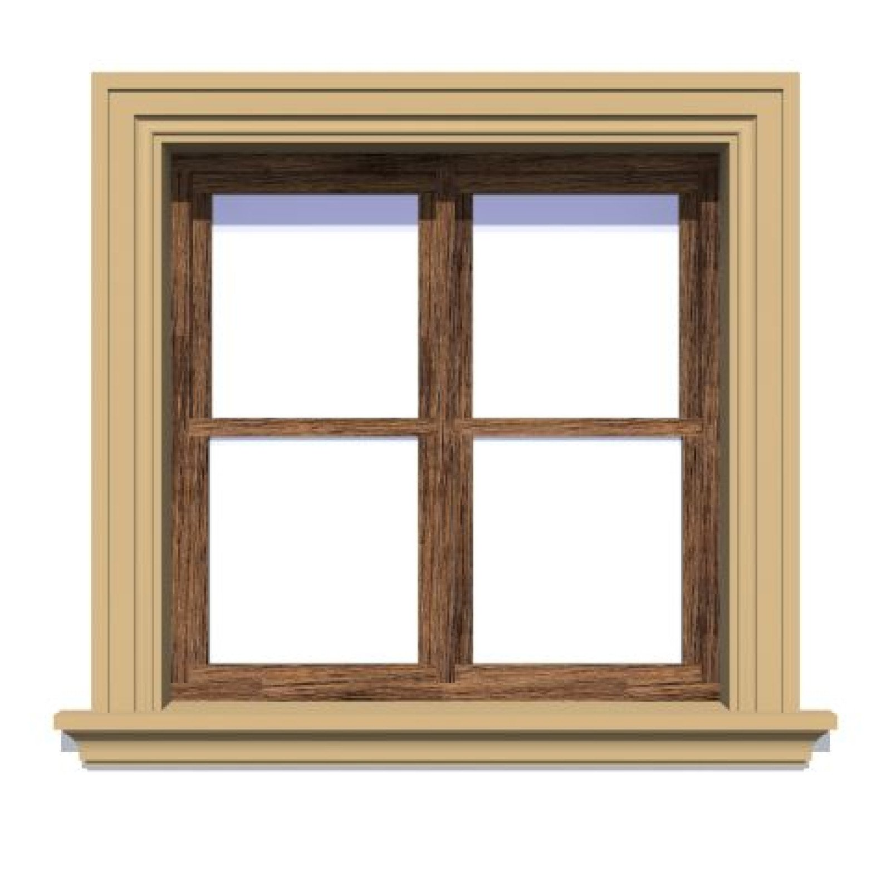
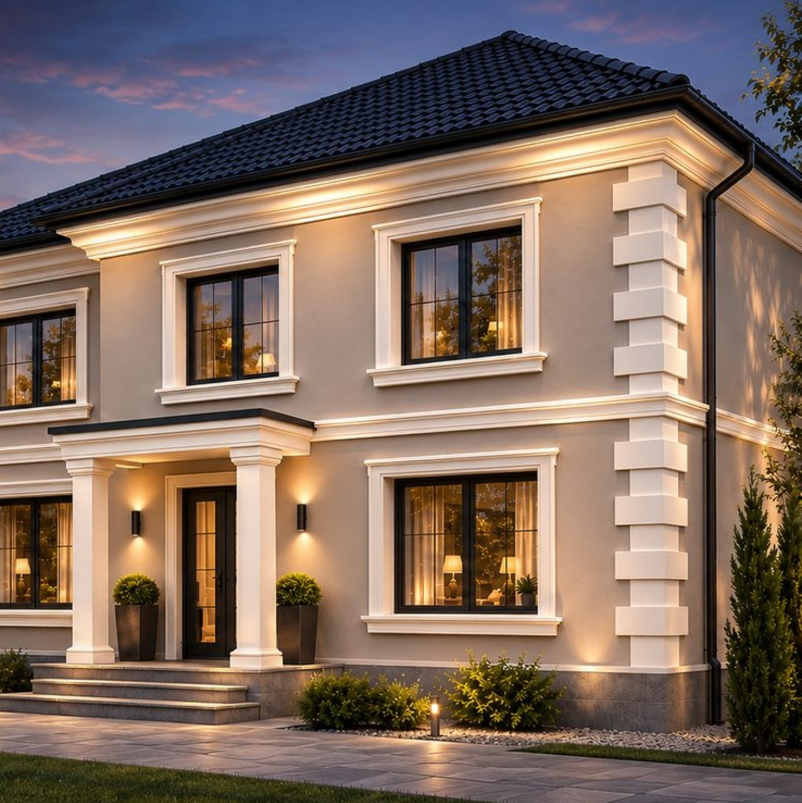
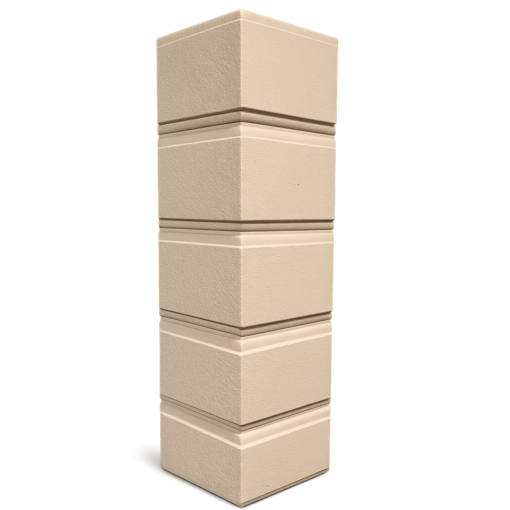

NMC prezintă
Povești
de casă
Cinci detalii care schimbă felul
în care îți trăiești casa.

01Atmosferă

IL11 · Plintă cu iluminat LED
Vrei ca serile acasă
să fie mai liniștite?
să fie mai liniștite?
Plinta IL11 ascunde o bandă LED și desenează o linie de lumină caldă la nivelul podelei. Fără lustre, fără umbre dure.
Descoperă penmcromania.ro

02Ordine

L2 · Scafă LED pentru tavan
Cabluri, țevi, tubulaturi?
Tavanul le poate ascunde.
Tavanul le poate ascunde.
Scafa L2 acoperă ce nu vrei să vezi și găzduiește spoturi sau bandă LED. În cameră rămâne doar lumina.
Descoperă penmcromania.ro

03Eleganță

Z11 · Cornișă decorativă
Un tavan simplu
poate spune o poveste.
poate spune o poveste.
Cornișa Z11, cu motiv floral clasic, transformă îmbinarea dintre perete și tavan într-un detaliu care se privește.
Descoperă penmcromania.ro

04Prima impresie

NA105 · Ancadrament fereastră
Casa ta e prima poveste
pe care o vede strada.
pe care o vede strada.
Ancadramentele NA105 conturează ferestrele cu linii clasice și dau fațadei proporție. Rezistente la UV, ger și umezeală.
Descoperă penmcromania.ro

05Caracter

NCL113 · Colțar exterior
Când se aprind luminile,
fiecare colț contează.
fiecare colț contează.
Colțarul NCL113 dă fațadei relief și umbre adânci. Strat de rășină și nisip cuarțos, gata de vopsit în orice culoare.
Descoperă penmcromania.ro
Care e povestea
casei tale?
Găsește detaliul potrivit pe
nmcromania.ro